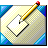
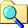
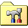

Hi, I'm Chloe!
Welcome to my little corner of the Internet.
I'm a full-time student in my senior year pursuing a degree in Cybersecurity at Western Connecticut State University.
I'm interested in IT operations/services, web development, programming, data network, vintage computing, and video games.
This website is designed to look and feel like a computer from the late 1990s / early 2000s because that's what I grew up on.
My Projects
A collection of things I've built, experimented with, or am currently working on.
PowerShell Projects
Windows automation and system administration experiments.
ESP32 Projects
Hardware experiments using the ESP32.
Web Development
Websites and web-based experiments.


